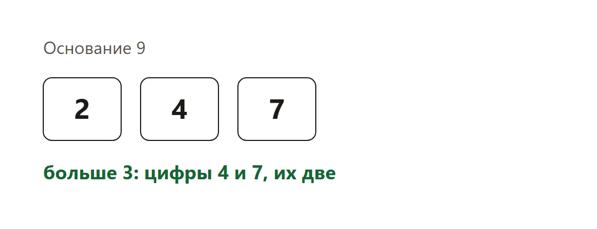

Страница для проверки. Сверху теория со схемами, ниже задания. Разбор всех задач — внизу, по шагам.
Что дают в задании 14
Число записано в другой системе счисления, или его надо в неё перевести. В демоверсии 2026 года три вида: посчитать особые цифры, найти неизвестную цифру, посчитать нули в записи. В варианте будет один вид.
Задача 1. Цифры уже готовы
Выражение 2 × 9² + 4 × 9 + 7 записали в системе с основанием 9. Сколько в записи цифр больше 3?

Степени девятки стоят по порядку, поэтому цифры уже 2, 4 и 7. Больше тройки — цифры 4 и 7.
Ответ: 2.
На экзамене степени огромные, например 27 в степени 2024. Идея та же: привести все слагаемые к одному основанию и читать цифры. Счёт тогда делает короткая программа, не калькулятор в уме.
Задача 2. Неизвестная цифра
Числа в системе с основанием 5: 3x2 и 1x4. Цифра x от 0 до 4. Сумма делится на 4. Нужно наибольшее такое x и частное от деления суммы на 4.
106 при делении на 4 даёт остаток 2, 10x тоже даёт остаток 2x. Остаток 2 + 2x должен делиться на 4, значит x нечётный. Из цифр 0…4 подходят 1 и 3. Наибольшее x = 3.
Сумма 106 + 30 = 136. 136 / 4 = 34. В ответ пишут частное, как в демоверсии.
Задача 3. Сколько нулей
Сколько нулей в двоичной записи числа 40?
40 = 32 + 8 = 101000. Нулей четыре: один в середине и три в конце.
Ответ: 4.
Как решать
Если выражение собрано из степеней одного основания — это и есть цифры.
Неизвестную цифру перебирают с конца алфавита и проверяют делимость.
Число цифр в длинной записи считают циклом: пока число больше нуля, смотрят остаток от деления на основание.
Задания
Зелёным отмечен верный ответ. Разбор внизу.
1. Несколько верных
Готовые цифры
Выражение 2×9² + 4×9 + 7 записали в системе с основанием 9. Что верно?
Цифры уже 2, 4 и 7
Цифр больше 3 ровно две
Само десятичное значение равно 205
В записи четыре цифры
Ответ: Цифры уже 2, 4 и 7; Цифр больше 3 ровно две; Само десятичное значение равно 205
2. Несколько верных
Неизвестная цифра
Сумма 3x2₅ и 1x4₅ делится на 4. Что верно?
x — цифра от 0 до 4
Наибольшее подходящее x равно 3
Частное от деления суммы на 4 равно 34
x может быть равно 4
Ответ: x — цифра от 0 до 4; Наибольшее подходящее x равно 3; Частное от деления суммы на 4 равно 34
3. Несколько верных
Нули
Двоичная запись 40. Что верно?
40 = 101000
Нулей в записи четыре
Единиц две
Нулей три
Ответ: 40 = 101000; Нулей в записи четыре; Единиц две
4. Несколько верных
Огромные степени
Что верно про экзаменационные числа?
Их приводят к одному основанию и читают цифры
Счёт длинной записи делает короткая программа
Идея та же, что у числа 247 в девятеричной системе
Огромное число всегда переводят делением на 10
Ответ: Их приводят к одному основанию и читают цифры; Счёт длинной записи делает короткая программа; Идея та же, что у числа 247 в девятеричной системе
5. Несколько верных
Что пишут в ответ
В задаче с неизвестной цифрой из демоверсии что пишут?
Частное, а не саму цифру
Частное в десятичной системе
Для нашего примера это 34
В ответ пишут основание 5
Ответ: Частное, а не саму цифру; Частное в десятичной системе; Для нашего примера это 34
6. Один верный
Цифры больше 3
Сколько цифр больше 3 в девятеричной записи?
1
2
3
7
Ответ: 2
7. Один верный
Наибольшее x
Какое наибольшее x подходит?
1
2
3
4
Ответ: 3
8. Один верный
Частное
Чему равно частное для x = 3?
29
34
36
136
Ответ: 34
9. Один верный
Нули сорока
Сколько нулей в двоичной записи 40?
1
2
3
4
Ответ: 4
10. Один верный
Основание
Какое основание у числа 3x2 в этой задаче?
2
4
5
9
Ответ: 5
11. Вписать число
Ответ: цифры больше 3
Сколько цифр больше 3? Только число.
Ответ: 2
12. Вписать число
Ответ: частное
Чему равно частное для наибольшего x? Только число.
Ответ: 34
13. Вписать число
Ответ: x
Чему равно наибольшее x? Только число.
Ответ: 3
14. Вписать число
Ответ: нули
Сколько нулей в двоичной записи 40? Только число.
Ответ: 4
15. Вписать число
Ответ: значение
Чему равно 2×81 + 4×9 + 7 в десятичной системе? Только число.
Ответ: 205
Разбор заданий
1. Готовые цифры
Верно. Цифры уже 2, 4 и 7 — Степени идут подряд.
Верно. Цифр больше 3 ровно две — Это 4 и 7.
Верно. Само десятичное значение равно 205 — 162 + 36 + 7.
Неверно. В записи четыре цифры — Их три.
Ответ: Цифры уже 2, 4 и 7; Цифр больше 3 ровно две; Само десятичное значение равно 205.
2. Неизвестная цифра
Верно. x — цифра от 0 до 4 — В пятеричной системе нет цифры 5.
Верно. Наибольшее подходящее x равно 3 — 1 тоже подходит, но оно меньше.
Верно. Частное от деления суммы на 4 равно 34 — 136 / 4.
Неверно. x может быть равно 4 — При x = 4 сумма на 4 не делится.
Ответ: x — цифра от 0 до 4; Наибольшее подходящее x равно 3; Частное от деления суммы на 4 равно 34.
3. Нули
Верно. 40 = 101000 — 32 + 8.
Верно. Нулей в записи четыре — Один в середине и три в конце.
Верно. Единиц две — На местах 32 и 8.
Неверно. Нулей три — Три нуля только в конце, ещё один стоит между единицами.
Ответ: 40 = 101000; Нулей в записи четыре; Единиц две.
4. Огромные степени
Верно. Их приводят к одному основанию и читают цифры — Как в маленьком примере с девяткой.
Верно. Счёт длинной записи делает короткая программа — Остаток от деления на основание — очередная цифра.
Верно. Идея та же, что у числа 247 в девятеричной системе — Меняется только размер.
Неверно. Огромное число всегда переводят делением на 10 — Делят на основание той системы, которую просят.
Ответ: Их приводят к одному основанию и читают цифры; Счёт длинной записи делает короткая программа; Идея та же, что у числа 247 в девятеричной системе.
5. Что пишут в ответ
Верно. Частное, а не саму цифру — Цифру нашли по дороге.
Верно. Частное в десятичной системе — Основание в ответ не добавляют.
Верно. Для нашего примера это 34 — 136 / 4.
Неверно. В ответ пишут основание 5 — Его и так знают из условия.
Ответ: Частное, а не саму цифру; Частное в десятичной системе; Для нашего примера это 34.
6. Цифры больше 3
Цифры 2, 4, 7.
Больше трёх — две из них.
Ответ: 2.
7. Наибольшее x
Подходят нечётные цифры 1 и 3.
4 не делится нужным образом.
Ответ: 3.
8. Частное
Сумма 136.
136 / 4 = 34.
Ответ: 34.
9. Нули сорока
101000 — четыре нуля.
Ответ: 4.
10. Основание
Нижний индекс 5.
Цифры не больше 4.
Ответ: 5.
11. Ответ: цифры больше 3
Цифры 4 и 7.
Ответ: 2.
12. Ответ: частное
x = 3, сумма 136.
136 / 4 = 34.
Ответ: 34.
13. Ответ: x
1 тоже подходит, но меньше.
Ответ: 3.
14. Ответ: нули
101000 — четыре нуля.
Ответ: 4.
15. Ответ: значение
162 + 36 + 7 = 205.
Ответ: 205.
Три прототипа систем счисления
Первый: цифры уже готовы, надо посчитать, сколько из них больше порога. Второй: неизвестная цифра x. Её перебирают от 0 до основания минус 1, переводят числа в десятичную систему и проверяют делимость. В ответ этой задачи пишут частное, не саму цифру, если так сказано. Третий: сколько нулей в двоичной записи.
Огромные степени на экзамене считают той же программой. В уме оставляют только понимание, какая цифра где стоит.
Рабочие программы к этому уроку
Каждый фрагмент запускается отдельно. В конце он печатает ответ. Комментарии на русском говорят, какая строка за что отвечает.
Система счисления: перебрать цифры готовой записи.
# 2*9^2 + 4*9 + 7. Цифры уже стоят в записи: 2, 4, 7.
digits = [2, 4, 7] # МЕНЯТЬ: цифры числа в этой системе
border = 3 # МЕНЯТЬ: «больше какого числа»
print(sum(1 for digit in digits if digit > border))
Что менять, если условие другое.
digits = [2, 4, 7] # МЕНЯТЬ: цифры числа в этой системе
border = 3 # МЕНЯТЬ: «больше какого числа»
Печать в конце оставляют: это и есть ответ.
Программа печатает 2.
Неизвестная цифра: перебор x и частное.
base = 5 # МЕНЯТЬ: основание
best_x = None
best_quot = None
for x in range(base): # цифра от 0 до base-1
first = 3 * base ** 2 + x * base + 2 # число 3x2
second = 1 * base ** 2 + x * base + 4 # число 1x4
total = first + second
if total % 4 == 0: # МЕНЯТЬ: на что делится сумма
best_x = x
best_quot = total // 4
print(best_quot) # в ответ пишут частное
Что менять, если условие другое.
base = 5 # МЕНЯТЬ: основание
if total % 4 == 0: # МЕНЯТЬ: на что делится сумма
Печать в конце оставляют: это и есть ответ.
Программа печатает 34.
Сколько нулей в записи числа.
n = 40 # МЕНЯТЬ: число
record = bin(n)[2:] # отрезаем приставку 0b
print(record.count("0"))
Что менять, если условие другое.
n = 40 # МЕНЯТЬ: число
Печать в конце оставляют: это и есть ответ.
Программа печатает 4.
Перевод в десятичную систему по степеням основания.
print(2 * 81 + 4 * 9 + 7) # МЕНЯТЬ: степени и цифры
Что менять, если условие другое.
print(2 * 81 + 4 * 9 + 7) # МЕНЯТЬ: степени и цифры